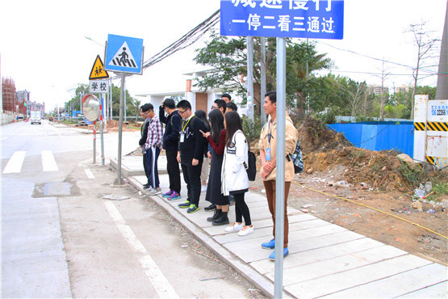
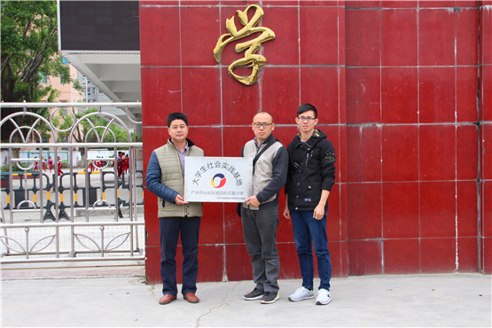
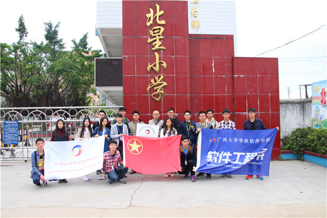

本网讯 为提高我院学子的社会实践能力，培养社会服务之心。3月14日，软件工程系党总支书徐向春、团学指导老师郑创兴与蓝精灵社会实践服务队一同前往街口北星小学举行挂牌仪式。
蓝精灵出发
在接待室中，徐向春书记与郑创兴老师就我院蓝精灵队员义教的内容和时间安排等问题，与北星小学校长共同进行了详细的商讨与协议，在计划更好地为传授小学生知识的同时，也培养我院学子积极主动的社会实践能力。
徐向春书记、郑创兴老师与北星校长举行挂牌仪式
为了更加有效率地去传授学生知识，蓝精灵队员们虚心向校长请教，并从中吸取教学经验和方法，在了解该校学生的情况后，蓝精灵队员们也提出了自己的教学想法并进行讨论，为接下来的义教做好充足的准备和安排。
全体纪念合照
为社会服务，为人民服务。本次挂牌仪式，不仅是蓝精灵服务队在北星小学义教的开始，更是我院学子迈向社会，为社会服务的一种热心与传递。
（供稿：记者部 陈运筹）